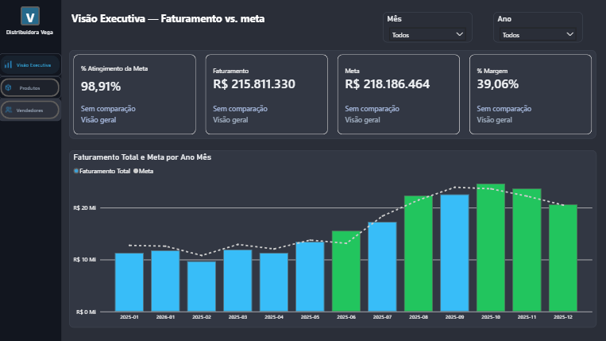
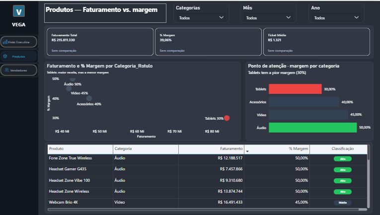
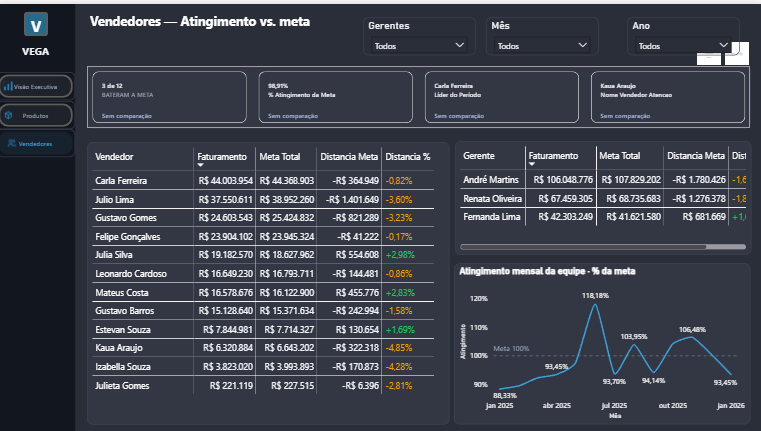

Faturamento total
R$ 215,8 Mi
jan/2025 a jan/2026
Tablets lidera o faturamento da empresa. É exatamente por isso que a margem está sendo drenada.
A VEGA é uma distribuidora fictícia de eletrônicos (tablets, áudio, vídeo, acessórios), construída como base de portfólio. O painel nasceu de uma pergunta simples que qualquer Diretora Comercial faria: quem realmente traz resultado — não só receita, mas lucro? A resposta, como os dados mostram abaixo, tem uma pegadinha.
Atingimento de meta, faturamento, meta e margem no topo, seguidos do comparativo Faturamento × Meta mês a mês — a base para investigar onde o resultado está vazando.

O gráfico de dispersão cruza faturamento × margem por categoria — Tablets aparece isolado, sozinho no canto de mais receita e menos margem (30%, contra 50% de Áudio). Descendo à tabela, a classificação de margem chega ao produto específico, não só à categoria.

Toda comparação entre dois percentuais nesse painel usa pontos percentuais (p.p.), não % relativo — são coisas diferentes, e confundi-las é o erro de leitura mais comum em relatório de negócio.
Apenas 3 dos 12 vendedores batem a meta — 9 ficam abaixo, inclusive Carla Ferreira, a própria líder de receita (R$ 44,0 Mi), 0,82% abaixo do seu alvo. Volume alto não é sinônimo de meta batida, no vendedor ou na categoria.

Este é o relatório real, publicado no Power BI Service — filtre por mês, ano, ou navegue entre as três páginas acima.